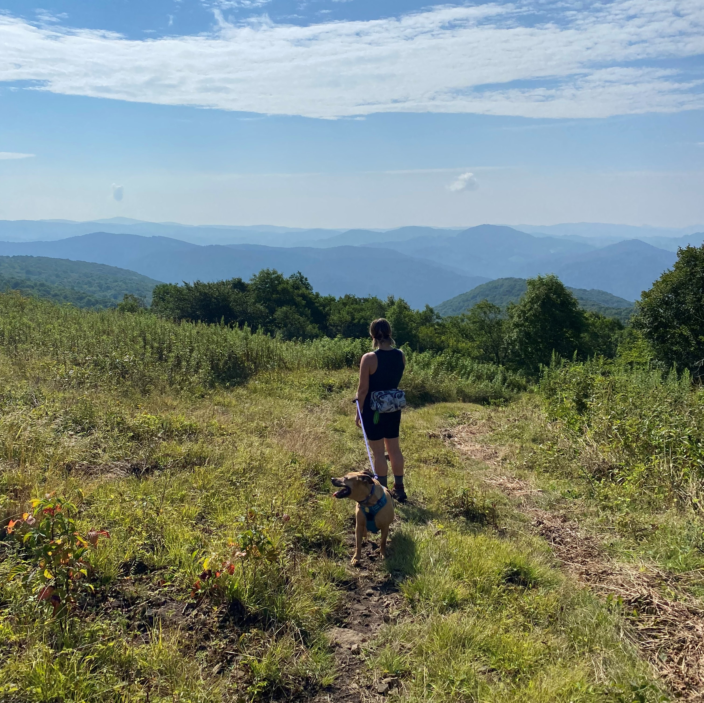

Introduction
- Personal background: I grew up in Ohio, then relocated to South Carolina for a short time before moving to Charlotte in the fall of 2019. I worked as a bartender for the majority of my 20s, however my most recent job was as a brewer.
- Academic background: I graduated from Worthington Kilbourne High School in 2009. I then attended Ohio State University for a year, but did not graduate. I have been attending CPCC since January 2021.
- Background in this subject: I have completed related courses at CPCC and I am also currently participating in a full time training program with a focus in Full Stack Java Development.
- Primary Computer Platform: I use a Dell XPS with Windows 10
- Courses I'm Taking & Why:
- WEB 215 - Advanced Markup and Scripting - Required for my major
- WEB 250 - Database Driven Websites - Required for my major
- CSC 121 - Python Programming - Required for my major
- CTS 118 - IS Professional Communications - Required for my major
- Funny/Interesting item about yourself: I love any activity that takes place off the ground. Some of my favorites are trapeze, silks, and rock climbing.
